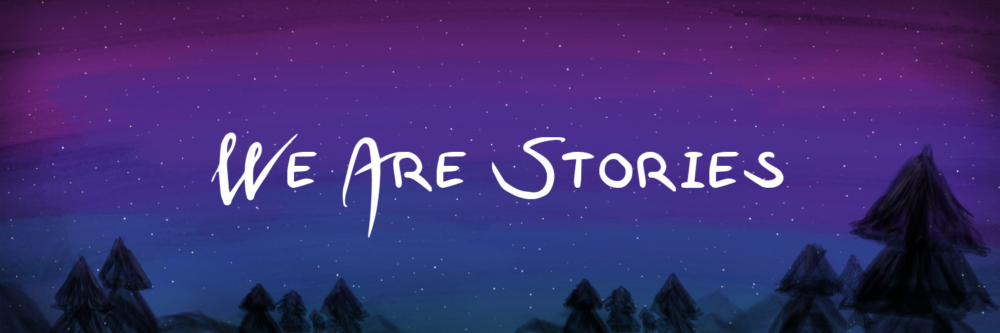

Sarah Sterman, Molly Jane Nicholas, Janaki Vivrekar, Jessica R Mindel, and Eric Paulos. 2023. Kaleidoscope: A Reflective Documentation Tool for a User Interface Design Course. In Proceedings of the 2023 CHI Conference on Human Factors in Computing Systems (CHI '23). Association for Computing Machinery, New York, NY, USA, Article 702, 1–19. https://doi.org/10.1145/3544548.3581255 [CHI Best Paper Award 2023]
Tiffany Chen*, Cassandra Lee*, Jessica R Mindel*, Neska Elhaouij, and Rosalind Picard. 2023. Closer Worlds: Using Generative AI to Facilitate Intimate Conversations. In Extended Abstracts of the 2023 CHI Conference on Human Factors in Computing Systems (CHI EA '23). Association for Computing Machinery, New York, NY, USA, Article 68, 1–15. https://doi.org/10.1145/3544549.3585651
Jessica R Mindel, Miles Baird, Allison Prisloe, Feifei Shen, Cherry Wu, Yang Yi, and Hiroshi Ishii. 2023. Pull It Together: Textile Patina as an Interface for Externalizing Invisible Tension. In Companion Publication of the 2023 ACM Designing Interactive Systems Conference (DIS '23 Companion). Association for Computing Machinery, New York, NY, USA, 232–236. https://doi.org/10.1145/3563703.3596638
Cassandra Lee and Jessica R Mindel. 2024. Closer and Closer Worlds: Using LLMs to Surface Personal Stories in World-building Conversation Games. In Companion Publication of the 2024 ACM Designing Interactive Systems Conference (DIS '24 Companion). Association for Computing Machinery, New York, NY, USA, 289–293. https://doi.org/10.1145/3656156.3665430
I build computational environments that let us connect with each other’s inner experiences. Many of the most intimate parts of ourselves, like the ways we process difficult experiences and form identities and values, are hard to access and share, but can be crucial assets in helping people better understand each other and themselves, especially at a time of division. My work focuses on mobilizing people to collaborate on creative projects which meaningfully integrate each collaborator’s core values, not only to support impactful creative outcomes, but to allow us to traverse each other’s inner worlds as a novel way to connect. To do so, I am building technologies that seek to use our meaning-making processes and the introspection and affect therein as resources for design. Generative tools that computationally model personal realizations, perspectives, and epistemologies will offer new ways to connect, create, and support well-being through each other’s meaning-making processes.
My name is Jessie Mindel, and I'm a PhD student at Carnegie Mellon's HCI Institute. I previously completed my master's in Media Arts and Sciences at the MIT Media Lab ('24), and my bachelor's in science at UC Berkeley in Electrical Engineering and Computer Science with an emphasis on New Media and Design Innovation ('22).
You can view my static portfolio at the link below, where I discuss my work across HCI research, robotics, product design consulting, graphics, creative writing, music, and art.